He moved to Oulu five days ago. He doesn't read Finnish yet.
Kaleva · Oulu
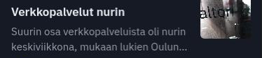
Accurate. Checked. Published. Unreadable to him.
Kalevalo · Junction Oulu 2026
Every day Kaleva publishes stories that change someone's week: a bus route, a housing deadline. The reporting is right.
Charles moved to Oulu five days ago. He doesn't read Finnish yet. That story was written for him too, and he never read it.
The journalism exists. It just doesn't reach everyone who lives here.
Meet Kalevalo
Kaleva's journalism, in any language, explained for any life.
Every story in the reader's own language
A line on what it means: for a newcomer, a student, a seasonal worker
The Finnish original always one tap away
Every card shows who stands behind it
Listen: every story read aloud in the reader's language
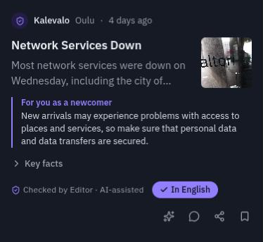
The same story, in the app
Kalevalo
Meet Kalevalo. It takes Kaleva's reporting and gives every reader the story in their language, plus what a translation can't: what it means for them, as a newcomer, a student or a seasonal worker. And any story can be heard, read aloud in the reader's language.
Local by default
The reader's town, found in one tap.
Location, onceThe municipality is found on Statistics Finland's map. Only the town is kept, never the exact location.
A newsroom per townEach town gets its own shift. Jev ranks Kaleva's feed with that town's Statistics Finland figures: languages, students, seasonal work.
A personal feedThe town's stories, in the reader's language, ordered for their situation and interests.
📍 News from KemiNo newsroom in a town yet? Readers get the nearest one covered.
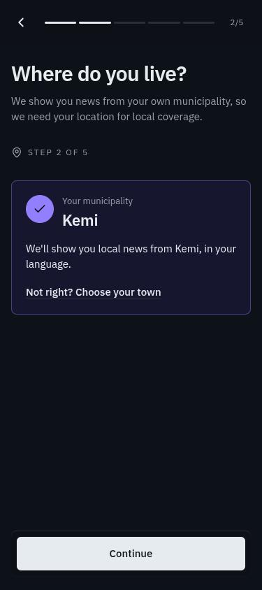
Kalevalo
And it's local. One tap, the browser asks for permission, and the app finds the municipality. Only the town is kept, never the exact location. Each town gets its own newsroom shift, and Jev ranks the news with that town's real figures from Statistics Finland: its languages, its students, its seasonal workers.
How the newsroom works
Agents do the desk work. A human decides.
1 · Find
Picks what matters
Reads Kaleva's feed, ranks every story, adds members' votes
2 · Write
Reporter + Explainer
The reporter writes only from the full article; the explainer adds what it means for each reader
3 · Check
Flags the risks
Every number against the article, every story against the JSN guidelines
4 · Editor
Presses Send
Nothing is published without a person. Their name goes on it.
Always a full read: permits · health · law · crime · minorsSámi: human translators only
Kalevalo
Behind it is a newsroom that works like a real one, in four steps.
Find: agents read Kaleva's feed and pick what matters.
Write: a reporter agent writes only from the full article, and an explainer adds what it means for each reader.
Check: every number against the article, every story against the JSN guidelines.
Then a person presses Send. Sensitive topics always get a full read, and Sámi is only translated by people.
How it decides
Two decisions: what to cover, and what each reader sees first.
For each town
What we cover
Is it about the town?
Does it affect people living there?
How newsworthy is it?
Can a reader act on it?
+ the town's Statistics Finland figures and members' votes, counted per group.
For each reader
What each reader sees first
Does it affect the reader's life, money, health?
Does it match their interests?
Is there something to act on?
How urgent is it?
On every card:Why am I seeing this? · Affects you 92%Never sees a name or email.
Kalevalo
How does it decide? Twice.
What we cover: four plain questions about every article, for that town, plus members' votes, counted per group so a small group isn't outvoted.
What each reader sees first: their town, then what affects them, their interests and how urgent it is.
The community is the other half of the newsroom
Members decide what matters, and hold the newsroom to account.
Members
Vote on what's next
Stories not yet covered go on a shortlist. Members vote; the next shift counts it. "You voted, we covered it."
Members
Ask the newsroom
Questions and tips go to the editors, who link the story that answers them.
Confirmed by people
Community Notes
Members add context or flag errors. A note shows only after others rate it helpful.
Trusted voices
Earned, not claimed
Badges come from verified help and editor approval, not follower counts.
Corrections
Visible fixes
Reports reopen a story for an editor. Corrections are shown on the card.
Where they are
Telegram digest
A morning digest in the chat app, set up in the chat. No app install needed.
Kalevalo
The community is the other half. Members vote on what gets covered next, ask the editors questions, and add Community Notes that show only once others rate them helpful. A Telegram digest reaches people where they already are.
Who pays
Reading is free. Three payers.
Organisations
Yearly licence
Universities · employers · cities
Local businesses
Ads
And partner placements, always labelled
Readers
€1 / month
Optional: no ads
Contributors→points→partner discountsNever cash.
Funders buy access, never coverage.
Kalevalo
Who pays? Reading is free. Universities, employers and the city pay a yearly licence, and local businesses pay to reach new residents.
Part of it comes back. An approved post or correction earns points, a rejected one costs points, and levels unlock bigger partner discounts. Never cash, so nobody is paid to make things up.
Funders buy access, never coverage.
Lämäri, Liiga fantasy
Play
Compete
Win
Get rewards
Free to play. Brands put up the prizes.
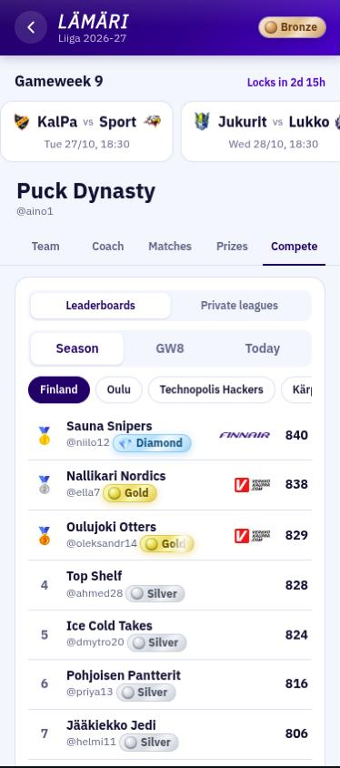
Leaderboard
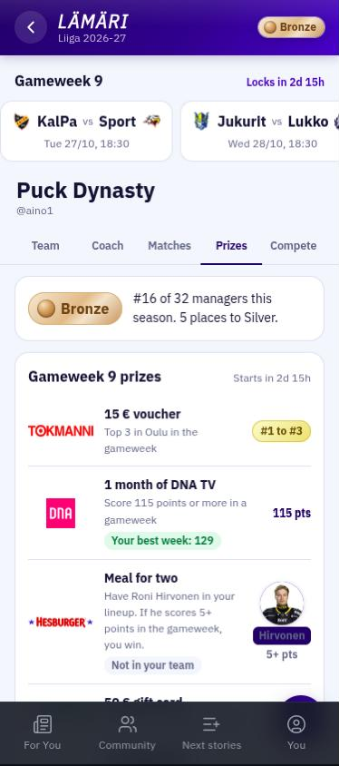
Prizes
Kalevalo
And a reason to come back every week: Lämäri, a free Liiga fantasy game. Play, compete with your town, win, and get rewards that local brands put up.
Live now, with today's Kaleva stories
Kalevalo's help for journalism, light for everyone.
Scan
Create an account
Pick your language and situation
Reader
Sign up and read local news
Press U to set the ngrok link
Newsroom editor
Run the agents, press Send
Same link + /newsroom/
Kalevalo · Junction Oulu 2026
Two codes, one each. Reader: sign up, pick your language, and read today's Kaleva stories. Editor: start a shift and press Send; the story lands in the reader's feed.
Kalevalo: Kaleva's journalism, for everyone who lives here. Thank you.
Walkthrough · about 5 minutes
Try the whole loop: an editor publishes, a reader sees it arrive.
Editor judge · Newsroom code
Sign in with the editor account
Pick the reader's city and start a shift
Watch the agents work
Send a ready story, or Approve one in the Editor queue
Reader judge · Reader code
Sign up and pick your language
Allow location, or choose your town
Tell the editor your town
Reload For You when the editor presses Send
Kalevalo · walkthrough
Only if the judges want to try it. One of you takes the Newsroom code, one the Reader code. The reader signs up first and tells the editor their town; the editor runs a shift for that town and publishes a story, and it shows up in the reader's feed.
Editor · 1 of 6
Sign in to the newsroom.
1Scan the Newsroom code (or open /newsroom/).
2Enter the editor account's email and password.
3Press Sign in to the newsroom.
Use the editor account we give you, not the demo password.
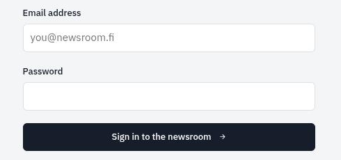
223
Kalevalo · walkthrough
The editor account is on the card we hand out.
Editor · 2 of 6
Pick a city and start a shift.
1Run the newsroom for: pick the reader judge's town.
2Stories: set to 2 to keep it short.
3Press Start a shift →. The AI newsroom page opens.
Grey button? A shift is still running. Only one runs at a time.
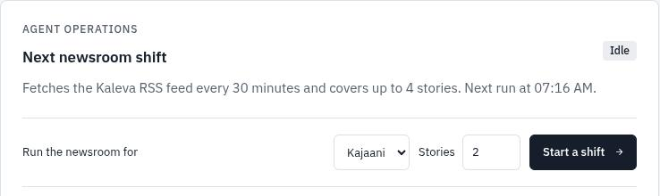
123
Kalevalo · walkthrough
Pick the reader's town so the story lands in their feed.
2When Editors (people) says stories are waiting, scroll down to them.
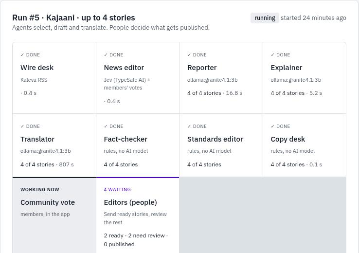
12
Kalevalo · walkthrough
The page refreshes by itself. Translation is the slowest desk on our small model.
Editor · 4 of 6
Send it, or review it.
1Ready to send: no blocking issue. Press Send to publish it under the editor's name.
2Needs review: a number didn't match, or a sensitive topic. Press Review.
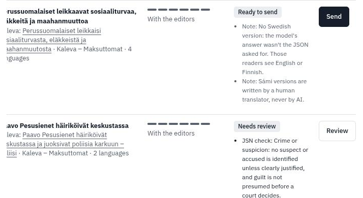
12
Kalevalo · walkthrough
Ready to send still needs a person: Send puts your name in the audit log. You can send before the shift finishes.
Editor · 5 of 6
Open the Editor queue.
1Tap ☰ (top left), then Editor queue. On a laptop it's in the sidebar.
2Stay on Stories.
3Read why the newsroom wants a person to check it.
4Afterwards, Translations holds the other languages.
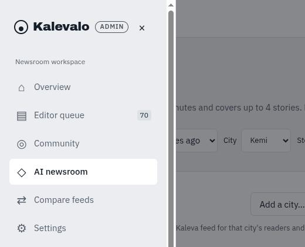
1
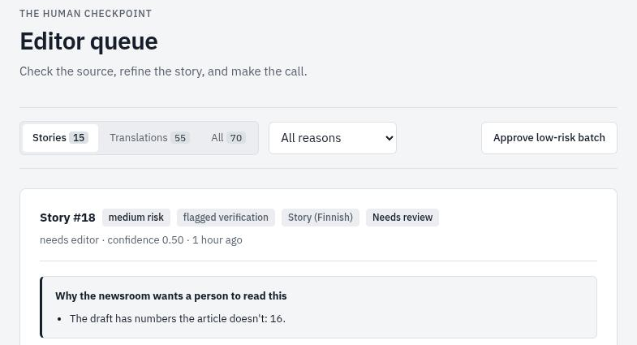
234
Kalevalo · walkthrough
This example was held because the AI draft has a time that isn't in the Kaleva article.
Editor · 6 of 6
Check it, fix it, approve it.
1Open the Source to compare with Kaleva's article.
2Edit text to fix the wording or a number.
3Press Approve: the story is published.
4Then approve the reader's language in Translations, so they read it in their own language.
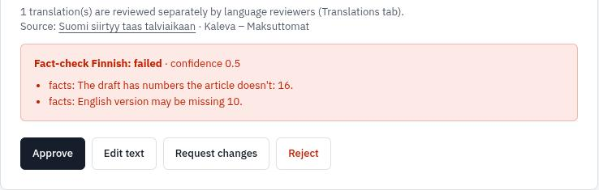
123
Kalevalo · walkthrough
Approve publishes the Finnish version; each translation is approved on its own in the Translations tab.
Reader
See the story arrive.
Open the Reader code, sign up, and pick your language and situation.
Allow location, or choose your town. For You then says News from your town.
When the editor presses Send or Approve, reload For You: the story is at the top.
Open the story and press Listen to hear it in your language. Try Key facts, the Finnish original and Why am I seeing this?
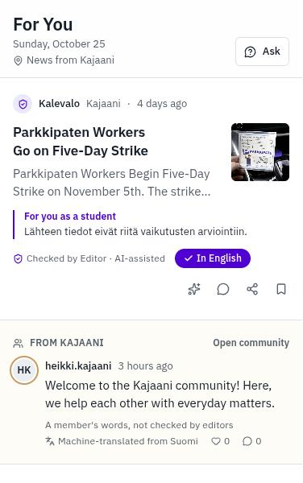
Kalevalo · walkthrough
The card shows who stands behind it: checked by an editor, AI-assisted, in your language, and the line for your situation.
Walkthrough · if something looks off
Quick fixes.
“Start a shift” is greyA shift is still running; only one runs at a time. Its finished stories can already be sent.
The shift picked no storiesEverything recent is already covered for that city. Pick another city.
The reader doesn't see the storyCheck that the shift's city is the reader's town, and that the story was sent or approved.
The card says “Not yet in English”Approve that language in Editor queue → Translations.
“You are about to visit…” pageThat's ngrok's free plan. Tap Visit Site once.
It's slowThe agents run on a small model on our own server. A 2-story shift can take 5–10 minutes; send each story as soon as it's ready.
Kalevalo · walkthrough
Keep this up while the judges try it.
Appendix · how the algorithm works
From what readers share to what they see.
Reader
LanguageSituationTopicsTownArrivalActivity
Jev · per town
Town figures Kaleva articles
Local30
Affects30
News25
Action15
+ votes
Agents · per story
Brief
For you × 4
Translations
fienukar
Then
Editor
Jev · per reader
Affects them45
Topics25
Action15
Urgency15
60 Jev 40 formula
Kemi
Why? 92%
Jev never getsnameemailuser IDcoordinates
Kalevalo · appendix
Only if the judges ask how it works. Left to right: what readers tell us; Jev scores every Kaleva article for each town with the town's Statistics Finland figures, plus members' votes; the agents write the brief, one "for you" line per situation and the translations, and an editor approves; Jev then orders each reader's feed: affects you 45, topics 25, action 15, urgency 15, blended 60/40 with a formula of topics, town, engagement and freshness. Jev never gets a name, email, user ID or coordinates.
0:00
Target 3:00 T start/reset timer
→Space next · ← back · keys work in either window
→ next · F fullscreen · P presenter notes · U set QR link · D dark